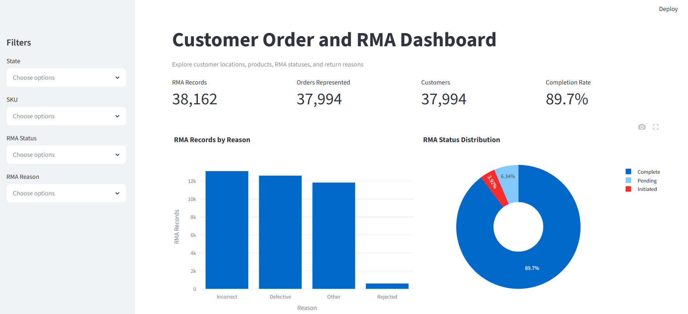

Artifact description
From static SQL results to an analytical application
The original DAD 220 project analyzed nationwide equipment sales and returns across related customer, order, and RMA tables. SQL joins, grouping, and aggregation revealed geographic, product, and return patterns, but the findings were communicated through individual queries and static results.
I selected this artifact because database and software professionals must do more than store data: they must give stakeholders reliable ways to access, understand, and act on it.
What changed
A maintainable path from raw files to decisions
The enhanced Python application imports three headerless CSV files, validates their structure, and stores 37,994 customer records, 37,994 order records, and 38,162 RMA records in SQLite. Primary keys, foreign keys, and indexes maintain relationships and support retrieval performance.
Validated import
Explicit column assignments, row-width validation, and parent-child loading order protect the relational structure.
Reusable CRUD layer
Centralized create, read, update, delete, and custom query operations manage connections and transactions consistently.
Secure operations
Parameterized values, table and column allowlists, foreign-key enforcement, rollback, and safeguards against unfiltered changes reduce risk.
Interactive analysis
Streamlit, Plotly, and pandas provide filters, summary metrics, charts, detailed results, and downloadable filtered data.
Functional evidence
One shared view for technical and business users

Course outcome coverage
All five outcomes in one data product
Collaboration: A centralized interface lets business and technical users explore a consistent dataset and support shared decisions.
Communication: Clear labels, metrics, interactive charts, tables, comments, and documentation translate complex records for varied audiences.
Computing solutions: Relational structures, joins, filtering, and Python aggregation balance accuracy, performance, usability, scalability, and maintainability.
Professional tools: Python, SQLite, SQL, reusable CRUD operations, Streamlit, pandas, and Plotly turn raw files into practical analytical value.
Security: Parameterized queries, allowlists, foreign keys, rollback, validation, and modification safeguards protect data integrity. Because SQLite is local, stored credentials are unnecessary; the design instead focuses on injection prevention and controlled operations.
Reflection
Reliable analysis starts before the chart
The enhancement showed me that a successful database application requires more than a correct query. Source data must be validated, relationships represented accurately, operations made reusable and secure, and results presented according to stakeholder needs.
Because the CSV files lacked headers, I had to identify each field, validate record widths, and confirm relationships before importing. The RMA dataset contained more records than the orders dataset because an order can have multiple RMA records; examining the actual data confirmed that rma_id, not order_id, belonged as the RMA primary key.
Debugging Streamlit also strengthened my understanding of initialization, scope, naming consistency, and script reruns. Finally, I limited the dashboard to claims supported by the dataset. Without price or date fields, revenue and time-series conclusions would be misleading, so the interface focuses on measurable order, product, location, status, and return-reason patterns.
Original + enhanced